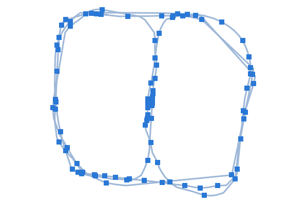
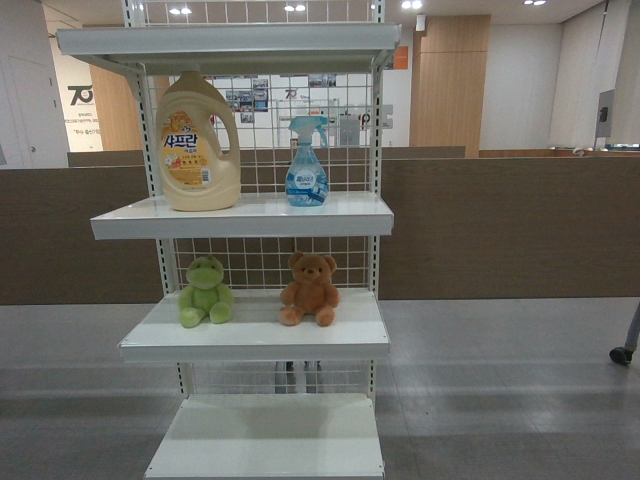
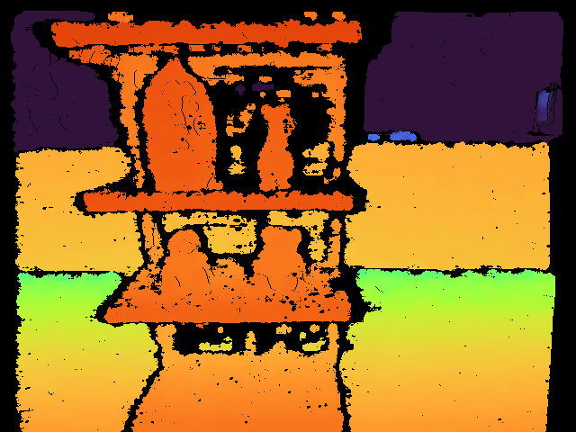
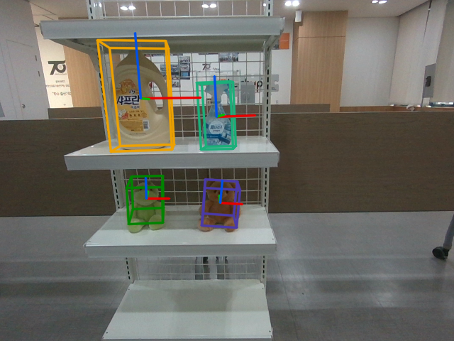

camera pose Tmap←S for every input frame, within the camera period
Keyframes

reference keyframe Kref of each frame
Loop closure
graph optimization corrects past keyframe poses
Pose / keyframe stream
per frame: t, Tmap←S, Kref, Tmap←Kref
keyframe list: all (Ki, Tmap←Ki), periodically and re-sent after each map change
update (corrected keyframe poses)
asynchronous LAN: pose messages, keyframe lists, and results arrive late and out of order
RECOGNITION DEVICE
RGB-D frame


captured at time t (metadata timestamp)
Zero-shot 6D object pose

TR←O, delayed result (arrives 0.7–6.6 s after t)
Capture-Time Registration
timestamp alignment (one clock, offset τ)
SLAM pose interpolated at t: Tmap←S(t)
reference keyframe Kref(t) of that pose
extrinsic transform X = TS←R
wait if the pose for t has not arrived
TK←O = Tmap←K(t)−1 Tmap←S(t) X TR←O
KEYFRAME-ANCHORED OBJECT STATE MAP
Object i
├ object ID and class
├ reference keyframe Ki
├ relative pose TKi←Oi
├ existence probability pi and state
(tentative / active / lost / remembered)
└ observations (position mean,
orientation vote)
keyframe update after loop closure (from the keyframe list)
↓
T′map←Ki · TKi←Oi
↓
consistent global object pose T′map←Oi; culled Ki → re-anchored to the nearest keyframe